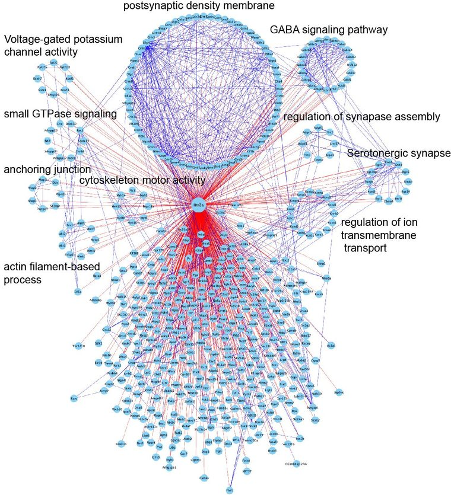
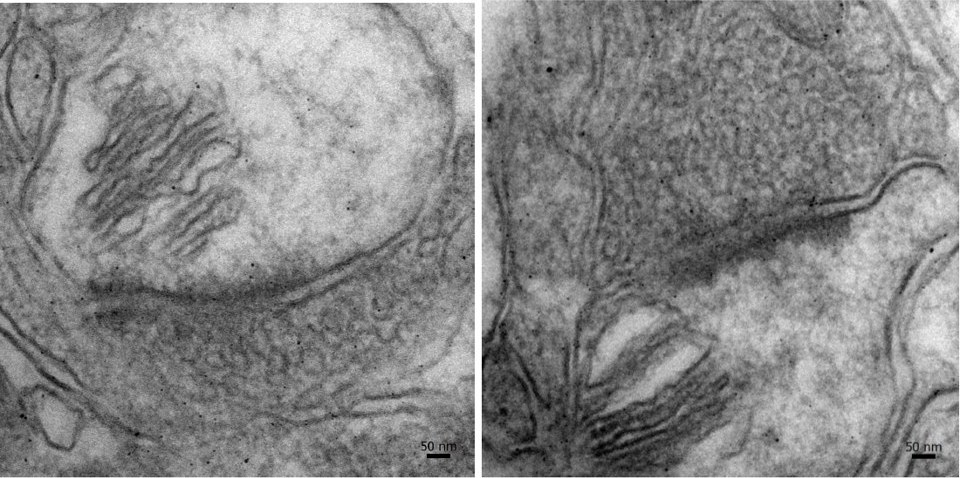

3
Atlas themes
5
Mouse lines
3 / 3
Viewers live
mm → nm
Spatial range

● 3 viewers live
Theme 01 · Mesoscale / microscale
Brain Neuroanatomy Atlas
Htr2aEGFP-CreERT2 · Htr2aCre · Htr2aA242S-EGFP-Cre
Whole-brain coronal series from three knock-in lines, served as
deep-zoom pyramids — from the whole section down to single labelled cells.
Open neuroanatomy atlas →

○ prototype
Theme 02 · Nanoscale
GPCR Molecular Atlas
Htr2aA242S-TurboID-Cre · TurboID proximity labelling
The in vivo proximity protein network of 5-HT2A receptors:
core cluster; drug-regulated cluster.
View molecular atlas →

○ prototype
Theme 03 · Ultrastructure
Ultrastructure / EM Atlas
Htr2aA242S-APEX2-Cre · APEX2-DAB · TEM
APEX2-driven DAB deposition places the receptor on identifiable
membranes in the electron micrograph, at the scale of the synapse itself.
View ultrastructure atlas →